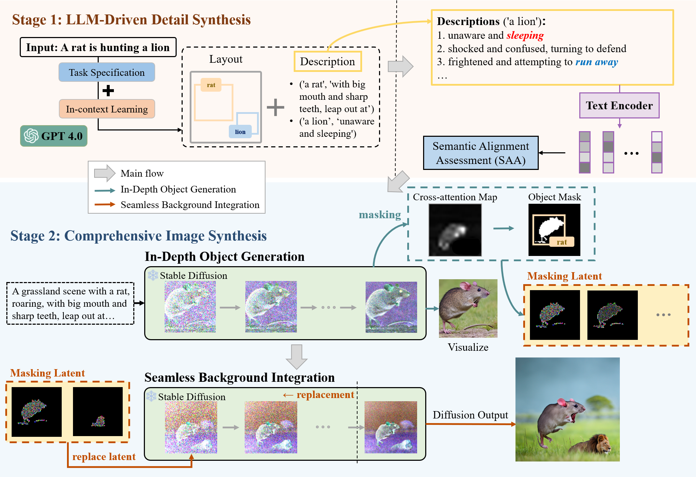
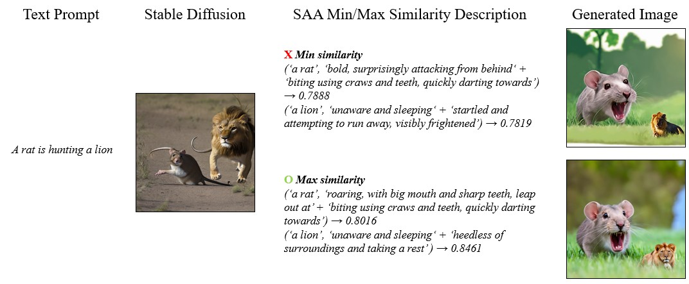

Result


In spite of recent advancements in text-to-image generation, it still has limitations when it comes to complex, imaginative text prompts. Due to the limited exposure to diverse and complex data in their training sets, text-to-image models often struggle to comprehend the semantics of these difficult prompts, leading to the generation of irrelevant images. This work explores how diffusion models can process and generate images based on prompts requiring artistic creativity or specialized knowledge. Recognizing the absence of a dedicated evaluation framework for such tasks, we introduce a new benchmark, the Realistic-Fantasy Benchmark (RFBench), which blends scenarios from both realistic and fantastical realms. Accordingly, for reality and fantasy scene generation, we propose an innovative training-free approach, Realistic-Fantasy Network (RFNet), that integrates diffusion models with LLMs. Through our proposed RFBench, extensive human evaluations coupled with GPT-based compositional assessments have demonstrated our approach's superiority over other state-of-the-art methods.
The Realistic-Fantasy Network (RFNet) contains two stages. In the first stage, we transform the initial input prompt into a refined version specifically tailored for image generation by LLMs. In the second stage, we utilize a diffusion model through a two-step process to generate outputs with extraordinary details.
As we proceed with generating images using the diffusion model using the details generated by the previous step, there is a critical challenge: the description lists generated by LLMs for one object usually overlook the relationships among them. For example, interpretations of “a lion” could range from being “unaware and asleep” to “frightened and trying to escape.” Although both depictions are valid, descriptions such as “unaware” and “trying to escape” can lead to conflicting interpretations, thus complicating the image generation process.
To overcome this challenge, we introduce the Semantic Alignment Assessment (SAA) module. This module calculates the relevance between different object vectors, thereby selecting the candidate description that best fits the current scenario. By conducting the cosine similarity among different descriptions, we can navigate the complexities introduced by the LLM's output, selecting the most compatible details for the diffusion model. This step is crucial for maintaining the coherence and accuracy of the generated images, highlighting our novel approach to mitigating the risk of conflicting descriptions. Through this module, we ensure textual precision and compatibility, and provide clear, consistent instructions for the subsequent diffusion model to generate visually coherent representations.
